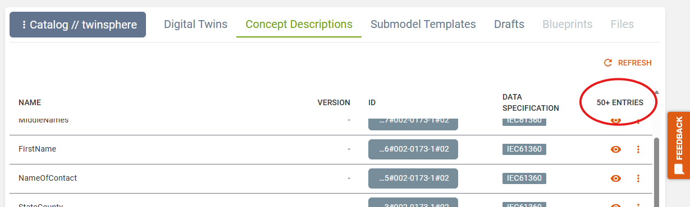
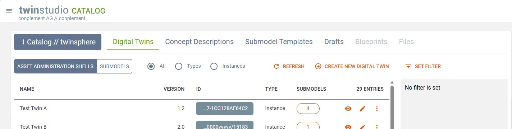
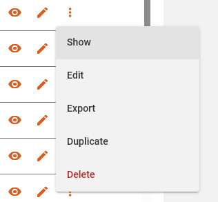
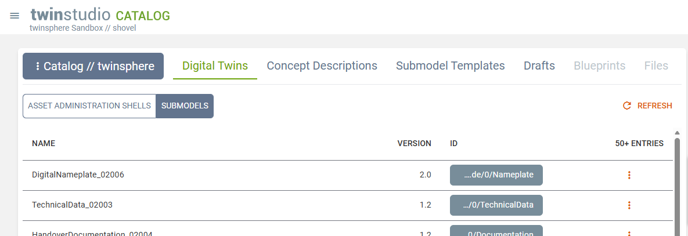
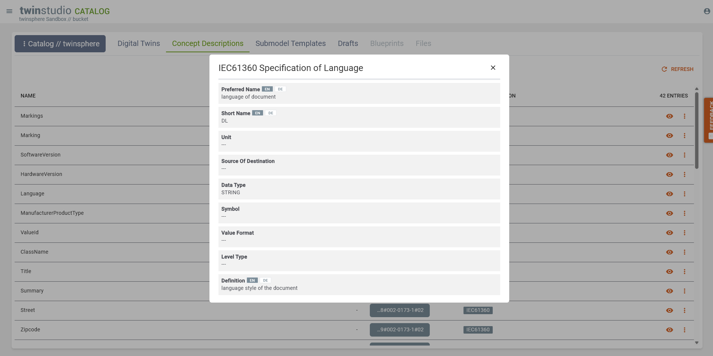
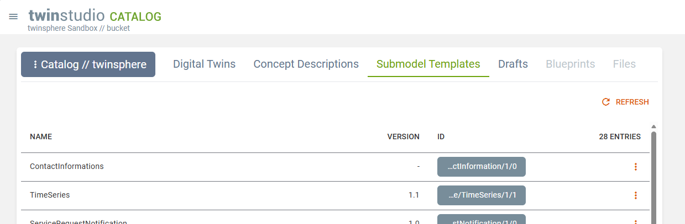
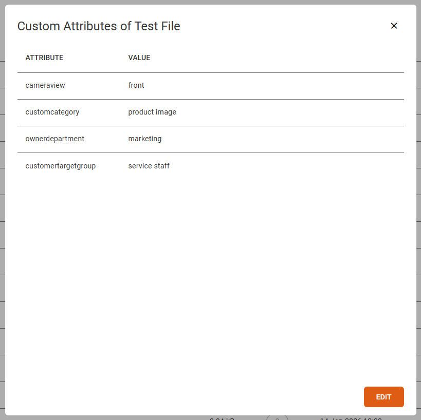
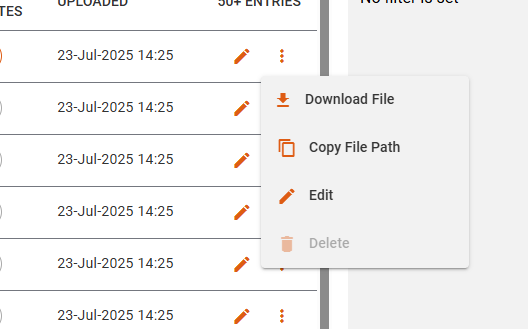
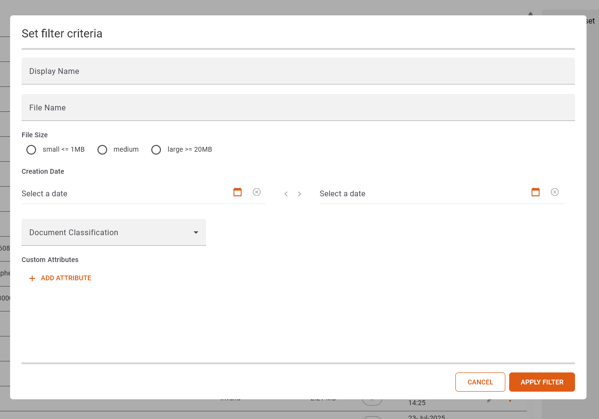

twinstudio Catalog
General Information
The catalog is a view on all the content of twinsphere like twins, submodel templates, concept description and more.
Each object type has its own catalog. Its records are displayed as a list. On most items you may invoke actions, like viewing or editing a twin or displaying the detailed definitions of a concept description.
If there are more entries than displayed (indicated by a "+" sign in the list header) a load more button is visible at the bottom of the list. Each load will add up to 50 entries.

Every catalog has a refresh button which reloads the first 50 entries with the selected filters if any are available and set.
Each id column contains a button that displays the shortened id. On click the full id is shown and can be copied to your clipboard.

Version is only displayed if the version of the entry's administration is set, else there is just a "-" visible. If no revision is given it will be assumed as 0.
Catalog of Twins
The catalog of twins has a toggle on top to switch between asset administration shells and submodels.
Asset Administration Shells

The quick filter at the top allows you to display only twins of the selected asset kind (types or instances).
On the right a filter for the shells can be set:
- Filters are combined with a logical AND, so twins have to fulfill all set filter criteria to be in the result list.
- Text filters are case-insensitive.
- A partially qualified value can be specified for all attributes listed as regex supported filter properties.
The submodel column shows the count of submodels the respective twin has. A click opens a dialog listing them with some basic information.
The action represented by an eye symbol (or the "Show" button in the more menu) opens the twin in our twinsphere Viewer for viewing all of its data in detail.
The action represented by a pen symbol (or the "Edit" button in the more menu) opens the twin in our Twin Builder for editing.

The more menu offers two further features:
- The export of twins as JSON or XML to a file or directly to your system's clipboard.
- The duplication of instance twins (not types).
- The deletion of twins.
Delete Twin Dialog
After clicking on the deletion entry, a dialog appears. There you can see which twin will get deleted. You also have the possibility to deselect certain submodels of the twin, if you do not want them to be deleted. Submodels which are referenced by other twins, cannot be selected for deletion. If you want to delete a type twin, you will get a warning about its implications.

Duplication of Instance Twins
When duplicating an existing twin all of its data (shell and referenced submodels) are duplicated. New IDs are created and assigned to the copies. We highly recommend using the studio's ID Generator feature here. Otherwise, you'll be asked to enter an AAS-ID and GlobalAssetID manually and we will use the aas-id value appended by "/sm/{ULID}" automatically for all new submodel IDs.
Submodels

The Submodels view of the Twin Catalog lists all existing submodels of the connected tenant.
The export of a submodel is available as action in the more menu of each record.
Note
The twin catalog of submodels is work in progress. There are more feature to come here.
Catalog of Concept Descriptions

This catalog lists all concept descriptions available in the corresponding repository of your twinsphere tenant.
Since a concept description may consist of multiple data specifications the according catalog column shows which types of specification are included in each record. Currently only the type IEC61360 is recognized and displayed by name. Every other specification will be labeled as "unknown". Please give us a hint if you experience this value so we can improve our recognition here.
If it is an IEC61360 data specification you can inspect the details of it by clicking on the eye button.
The export of a concept description is available as action in the more menu of each record.
Preferred Name, Short Name and Definition display an initial value from the available languages according to following criteria:
- the data language
- containing the data language
- the ui language
- containing the ui language
- english (en)
- containing english (en)
You can select another language value by clicking on the corresponding language tag. Hovering over a tag will display an indicator above it. The selected language is highlighted with a gray background.
Catalog of Submodel Templates

This catalog displays all submodels in your twinsphere repository that are of kind template. These are the ones you can choose from when adding new submodel to your twin in Twin Builder.
The export of a submodel template is available as action in the more menu of each record.
Catalog of Drafts

Your personal twin drafts are shown here.
They are sorted by the last modified column in descending order. The state column shows if your draft has still issues (issue count as tooltip) or is valid already.
You may continue editing the twin draft by clicking on the pen symbol or choosing "Edit" in the more menu. This is as well where you may "Delete" the draft or "Export" it.
For valid drafts only the more menu offers a "Publish" action. This will publish the twin to the connect twinsphere tenant's repository and delete the draft afterward.
Note
With introduction of the upcoming twinstudio modules Template Designer and Blueprint Editor further draft types will become available and shown in this catalog as well.
Catalog of Files
This catalog lists all files of twinsphere's file repository.
The classification value is displayed according to VDI 2770 Blatt 1: 2020, see respective table at Handover Documentation Submodel ⧉. Values that are not in this list will be displayed as invalid and empty values are represented by a dash (-).
The file size is given in kilo bytes for values below 100 kB and in mega bytes if larger.

The custom attributes column displays the amount of configured attributes. If greater than 0 it gets clickable. A popup dialog shows the keys and values of all custom attributes. An edit button enables you to directly edit them.

Each file has a more menu (represented by three vertical dots) offering the following actions: Download File, Copy File Path, Edit Properties and in future iterations the option to Delete.

Set Filter opens a dialog which allows to filter the file list.
The Display Name and File Name filter check for the inclusion of text ignoring casing.
The two date selects are for start and end date.
Start date the time 00:00:00 will be added and to the end date 23:59:59.
Added custom attributes will be matched exactly.
If either a key or a value is empty this pair will be ignored for filtering the files.

Upload File
To start an upload for a file you have to go to the file catalog an click on the upload button.

First you have to choose a file by clicking on the drag and drop zone and choose the file from the dialog.

You can add a file name, a display name and a classification to the file. You can also store user-defined attributes for the file. An attribute consists of a key and a value, which both must not be longer than 2048 characters. A key must be unique in the list of attributes. For example the key could be "type" and the value could be "logo". If you do this with every logo you could find all logos with the filter function in the file catalog.
Edit File Properties
To edit the properties of a file, you can click on the pencil icon or on the "Edit Properties" entry in the menu.

You can change the display name and classification of the file. You can also store user-defined attributes for a file. An attribute consists of a key and a value, which both must not be longer than 2048 characters. A key must be unique in the list of attributes.

Each key and each value must be filled in, or the attribute must be removed completely. If the Save button is not activated or is deactivated when clicked, a validation rule has been violated.